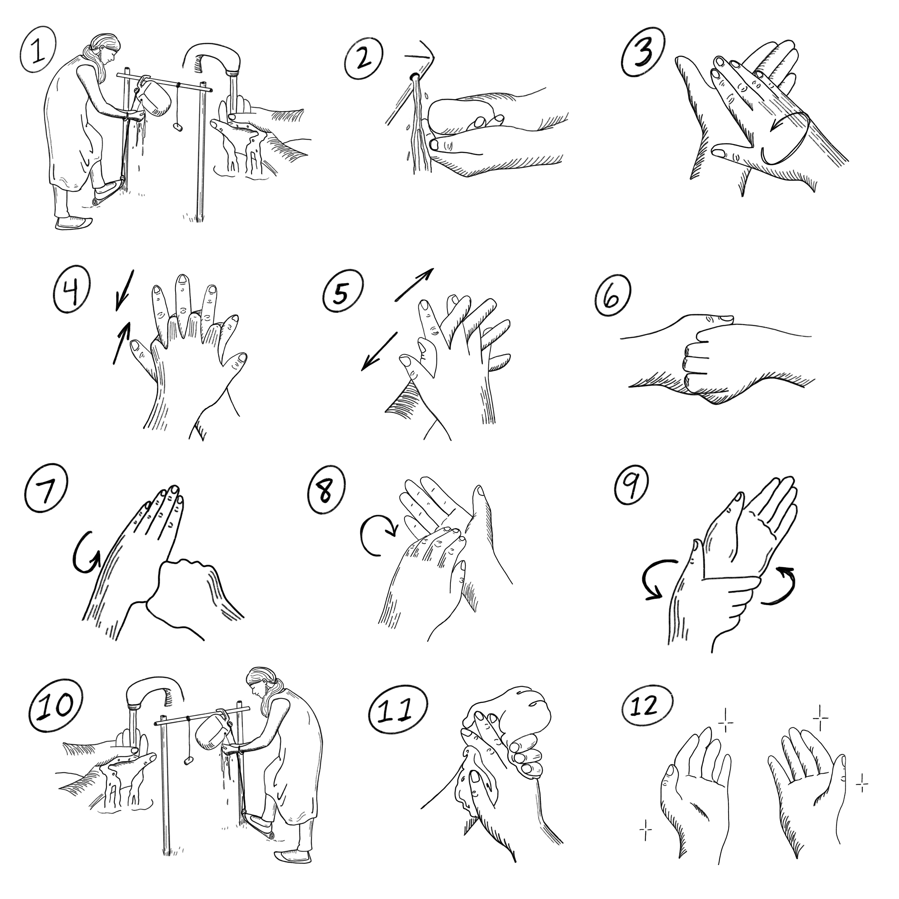

EN
|
FR
|
ES
10
HERRAMIENTAS PARA MENSAJES COMUNITARIOS 10
Pasos para lavarse las manos en epidemias

¡Lave sus manos correctamente durante una epidemia para protegerse y detener la propagación de gérmenes!
Descargar PDF